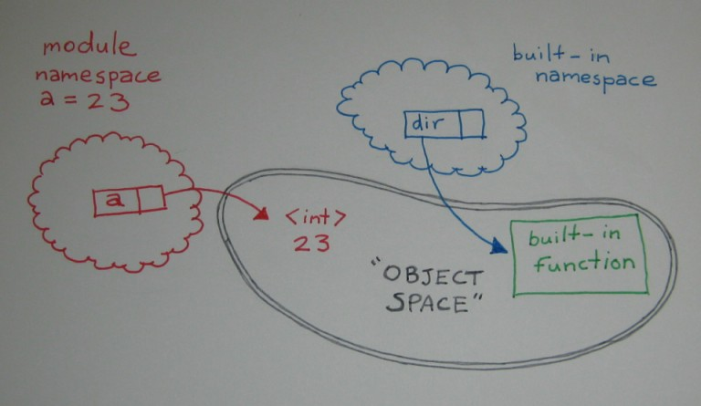

Welcome back. Let's get right to it, shall we? In Python, explicit is better than implicit. The interpreter won't try to convert the string "3.14159" into a number for you implicitly—if you try to add that string to the integer 1, you'll get an error message:
>>> 1 + "3.14159"
Traceback (most recent call last):
File "<stdin>", line 1, in <module>
1 + "3.14159"
~~^~~~~~~~~~~
TypeError: unsupported operand type(s) for +: 'int' and 'str'
We'll talk about that more later in the lesson; for now, just let those terms marinate in your mind. In the last lesson, you saw how to represent string and numeric data in Python programs, and use the print() function to send expression values to the user. Now we'll look at how to store data and how to extract data from the user. Because interactive user input arrives to us in string form, we'll also need to be able to convert strings into other data types.
Most programming languages let you name your data. Giving meaningful names to data makes your code easier to read and helps you to recall its purpose. It also allows you to run the same code with different data values. And most importantly, giving your data meaningful names means you can refer to the same piece of data at different places in your program: you can store data and then use it later.
In Python, a value is given a name with the assignment statement. In its simplest form, the assignment statement consists of a name, an equals sign, and a value. The value can be a single data item or an expression.
Type these Python statements in an interactive session:
>>> r = 32
>>> pi = 3.14159
>>> area = pi * r ** 2
>>> print(area)
3216.98816
>>> item = { 'link': "http://holdenweb.com", 'value': 99.99 }
>>> targetURL = item['link']
>>> print(targetURL)
http://holdenweb.com
>>> lst = range(5)
>>> print(lst)
range(0, 5)
>>> r = r + 1
>>> print(r)
33
| Modern Python | range(5) is a lazy sequence object, not a list. It generates values on
demand rather than storing them all in memory at once. Naming the variable lst is
therefore a little misleading—a name like nums would be more accurate in modern code. |
These assignment statements all have pretty much the same format: name = value. They don't represent mathematical equations, they are instructions to the computer. The statements are telling the computer to associate the value on the right side of the equals sign with the name on the left side of it. Once a name is bound to a value, it stays that way unless you change it.
When you read a statement like r = r + 1, be sure to read it like a programmer, not a math student! For us, it means to take the value currently associated with the name r, add one to it, and then associate this new value with the name. So if the value of r was 1112 before the statement was executed, it would be 1113 afterward.
Every programming language has rules about which names are acceptable. In Python, the interpreter requires every name to begin with a letter (upper- or lower-case) or the underscore character. The rest of the name can be made up of letters, digits, or underscores. So, i, _private, CamelCase, and very_long_name_127 are all valid names. But 12_name isn't valid, because it begins with a digit. my-name is also invalid, because it contains a hyphen.
Values in Python are stored in memory allocated from a heap (also known as "object space"). The heap is an expandable storage space. Namespaces hold names, which refer to values (objects in object space). Memory usage in Python is conveniently automatic. When you bind a name to a value with an assignment statement, that binding takes place in the "current namespace." In a complex Python program, namespaces are created and destroyed continually.

Each Python file you create is a module. Each module has its own namespace (often called the global namespace). An assignment statement at module level affects the module's global namespace. When the interpreter needs the value associated with a specific name, it looks for the name in a predefined list of places. For module-level code, there are only two namespaces to consider: the module global namespace and the built-in namespace that holds Python's essential functions. You'll learn to write functions and classes later when we create instances of classes. Every time you call a function or create a new class or instance, the Python interpreter creates a new namespace. That namespace becomes unavailable when the related object is destroyed.
Start the interactive interpreter again and try these commands (remember, the >>> is a prompt, not something you have to type):
>>> a = 23 >>> dir() ['__builtins__', '__doc__', '__loader__', '__name__', '__package__', '__spec__', 'a'] >>> dir(a) ['__abs__', '__add__', '__and__', '__bool__', '__ceil__', '__class__', '__delattr__', '__dir__', '__divmod__', '__doc__', '__eq__', '__float__', '__floor__', '__floordiv__', '__format__', '__ge__', '__getattribute__', '__getnewargs__', '__getstate__', '__gt__', '__hash__', '__index__', '__init__', '__init_subclass__', '__int__', '__invert__', '__le__', '__lshift__', '__lt__', '__mod__', '__mul__', '__ne__', '__neg__', '__new__', '__or__', '__pos__', '__pow__', '__radd__', '__rand__', '__rdivmod__', '__reduce__', '__reduce_ex__', '__repr__', '__rfloordiv__', '__rlshift__', '__rmod__', '__rmul__', '__ror__', '__round__', '__rpow__', '__rrshift__', '__rshift__', '__rsub__', '__rtruediv__', '__rxor__', '__setattr__', '__sizeof__', '__str__', '__sub__', '__subclasshook__', '__truediv__', '__trunc__', '__xor__', 'as_integer_ratio', 'bit_count', 'bit_length', 'conjugate', 'denominator', 'from_bytes', 'imag', 'is_integer', 'numerator', 'real', 'to_bytes']
| Note | You may see different results. |
Consider these questions and answers as they relate to the code you just typed:
- Q. In which namespace was a value bound to a?
A. The module global namespace of the interactive session. - Q. In which namespace did the interpreter locate the dir() function?
A. The built-in namespace. - Q. Which namespace does dir() report on when called with no argument?
A. The module global namespace.
Under normal circumstances, each line of your Python program is a single statement. The exceptions are when a line is explicitly continued by the addition of a backslash, or when a line ends before an opening paired delimiter (curly bracket, parenthesis, or square bracket) is closed. When you enter statements and expressions in the interactive interpreter, you normally see a >>> prompt, indicating that the interpreter is waiting for you to enter a new statement or expression. If you see a ... prompt instead, it means the interpreter does not regard the current statement or expression as complete. There are different ways to lay out a Python assignment. These next few assignments all bind the value 927 to the name "a." Type these commands in an interactive session:
>>> z = 100 >>> a = (3 + z) * 9 >>> print(a) 927 >>> a = \ ... (3 + z) * 9 >>> print(a) 927 >>> a = ( ... (3 + z) ... * 9 ... ) >>> print(a) 927
| Modern Python | Prefer open parentheses over backslash continuation. A trailing backslash is fragile—an accidental space after it silently breaks the continuation—whereas an unclosed parenthesis always works correctly. The Python style guide (PEP 8) recommends the parenthesised form. |
Although multiple statements on a single line can be separated by semicolons, we don't recommend it. As you'll discover down the road, leading spaces are significant! Python uses leading space to mark blocks of code, so if you start a command line with a space, the command generally will fail with a syntax error.
Let's try a few more examples in the interactive interpreter:
>>> a = 1 >>> z = 2 >>> print(a, z) 1 2 >>> a = 1; z = 2 >>> print(a, z) 1 2 >>> a, z = 1, 2 >>> print(a, z) 1 2
In our first example, we have a different single assignment statement. Next, those same two statements appear, separated by a semicolon. Finally, there is an example of what is called an unpacking assignment. This has a comma-separated list of names on the left and another list of values on the right. Each value is bound to the corresponding name.
In the programs you've written so far, all statements have started in the first column of the line. Statements can be indented when they are the object of one of Python's compound statements. A set of statements at the same indentation level (including any code indented within a statement) form a block, also called a suite. We'll look more closely at suites when we discuss compound statements in future lessons. For now, just be sure to start your lines without any leading spaces.
In a Python program text, the "#" character (pound sign, octothorp, hash mark, call it what you will) introduces a comment. The comment runs to the end of the line—it is disregarded by the interpreter. Comments should only occur where whitespace is legal (for readability). Comments help other programmers to make sense of your program, so include them often. As your skill level increases, your comments may be less detailed, but your code should always be easy to read for both intent (the desired result of the code) and implementation (the way the code accomplishes the intent). Use comments as necessary to keep your code readable!
Any Python expression is a valid statement (though statements are never expressions). A string on its own, as the first statement of various Python constructs (like module, function, class, and method), is interpreted by many tools as documentation. Using a three-quote string allows you to add lots of documentation to your programs. Use docstrings extensively to document your code. Later examples will show you some practical docstring content. For now, let's try a new program. Type this code:
# # This is a program that prints its own docstring # """print_docstring.py prints its own docstring (the string that's the first executable statement, which in this case extends to three lines).""" print(__doc__)
Save the program as print_docstring.py and run it:
print_docstring.py prints its own docstring (the string that's the first executable statement, which in this case extends to three lines).
| Note | __doc__ in the Module Namespace: In the code above, the interpreter resolves the name __doc__ by looking in the module namespace. The name is always present, but if the module has no docstring, it is set to the special value None. |
Now what happens if we remove the docstring—what happens when the print statement runs? Turn the string into an assignment statement by putting "x = " at the beginning of the first line after the comments, as shown:
# # This is a program that prints its own docstring # x="""print_docstring.py prints its own docstring (the string that's the first executable statement, which in this case extends to three lines).""" print(__doc__)
Save and run it. Can you think of any other interesting variations on this program? Go ahead and try a few of your own experiments!
In the example below, replace each comment with a Python expression that returns the value described.
Do not use any literal strings—write expressions using methods of s only! For example: s.capitalize().
To see a list of the methods of a string, use dir("") in the interactive interpreter.
Type in this code:
# # case_convert.py # s = "this Is a Simple string" slower = # s converted to lower case <-- supper = # s converted to UPPER CASE <-- stitle = # s converted to Title Case <-- print(s, slower, supper, stitle, sep="\n")
Save it as case_convert.py and run it.
Test your program on various strings by modifying the assignment statement. Play with using the dir("string") function to investigate string methods. For example, try s.capitalize(), s.islower(), s.swapcase()...
It's a little tedious to have to edit the program each time you want to see what happens with a new value, right? Next we will look at a way of allowing the user to provide the strings that our program operates on and avoid all that extra work!
To read data entered (interactively) by the user, you use the input() function. If you provide input() with a string argument, that string (and only that string) will be printed as a prompt, immediately before reading an input string from the user. Once the user types their input (ending it by pressing Enter), the function returns the user's input (less the Enter) as a string. Unlike the lines you will read from files, user input has no trailing newline. This is fine, but if you need a number from the user, you must perform some sort of conversion. You also need to handle any errors that may arise from your attempts to convert (we'll let that slide for now though and push onward!)
A couple of lines of input are shown below. Notice that the input() function always returns a string—even when the user actually types in a number:
>>> v = input("Enter a number: ")
Enter a number: 42
>>> v
'42'
>>> type(v)
<class 'str'>
As we mentioned earlier, in Python, "explicit is better than implicit," so we cannot add a string (even a string whose value is a valid number) to a number. Instead, we have to explicitly convert the string first. The int() function takes a single string as an argument, and returns the integer represented by the string (or raises an exception). The float() function is similar, but takes any valid string representation of a floating-point number instead (again raising an exception if the string cannot be converted).
Type in these commands interactively:
>>> n = int(input("Enter a number: "))
Enter a number: 33
>>> x = float(input("Another number: "))
Another number: 45.67
>>> n, x
(33, 45.67)
>>> y = float(input("Final number: "))
Final number: abc.def
Traceback (most recent call last):
File "<stdin>", line 1, in <module>
y = float(input("Final number: "))
~~~~~^^^^^^^^^^^^^^^^^^^^^^^^^
ValueError: could not convert string to float: 'abc.def'
| Modern Python | Since Python 3.12, the float() error message quotes the bad value:
could not convert string to float: 'abc.def'. Earlier versions produced the same
message without quotes around the value, making it harder to spot stray spaces or an empty
input. |
Feel free to try other inputs. Observe, too, that the floating-point number system used on computers cannot express 45.67 exactly, though it gets pretty close. This usually only happens with floating-point numbers, not integers. If you haven't programmed before, just remember these "rounding errors" make arithmetic slightly inexact, so be sure they don't make a difference to your results. They can sometimes add up surprisingly quickly. In the last of the three cases above, the user is entering text that cannot be converted into a number. So Python calls the action to a halt with an exception traceback that tells you what happened. (Pretty cool, huh?)
Because the observations were made in an interactive interpreter after the traceback, you see another >>> prompt. If an unhandled exception occurs when running a program, the program run is terminated. But this isn't always your desired result. Fortunately, there are ways you can handle these exceptions and avoid program termination. For now, let's just type carefully when we need to provide numeric input!
Okay! Let's put all this together in a short sample program that asks for the height, width, and depth of a room, and calculates the surface area of the walls. It'll give you an idea of how real code is written.
Type this code:
#
# wall_area.py
#
h = float(input("Room height: "))
w = float(input("Room width : "))
d = float(input("Room depth : "))
area = 2 * (h * (w + d))
print("Area of walls:", area)
Save it as wall_area.py and run it a few times, using different inputs:
Room height: 12 Room width : 14 Room depth : 32 Area of walls: 1104.0
What happens if you give the program a non-numeric input? (Never fear. We'll show you how to deal with those circumstances later.)
We're covering a lot of material in these early lessons, and we still have a long way to go. You're doing really well so far—stick with it—see you in the next lesson!